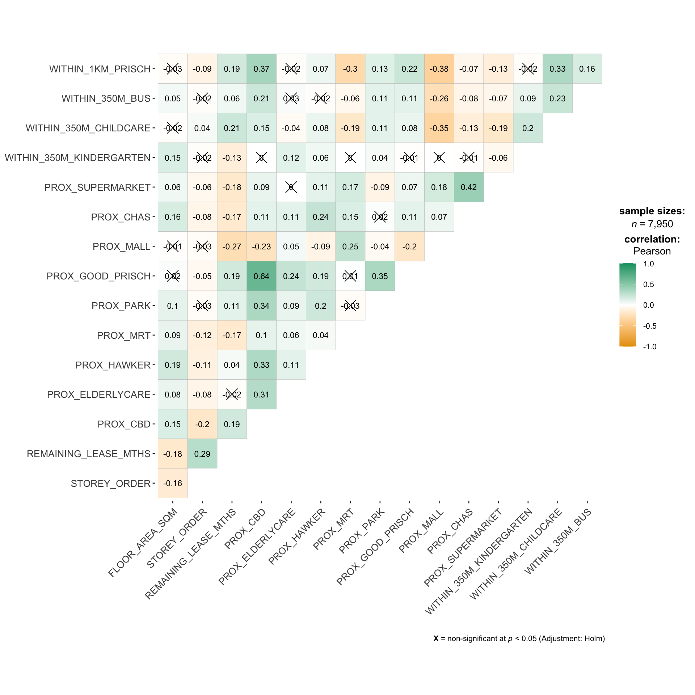
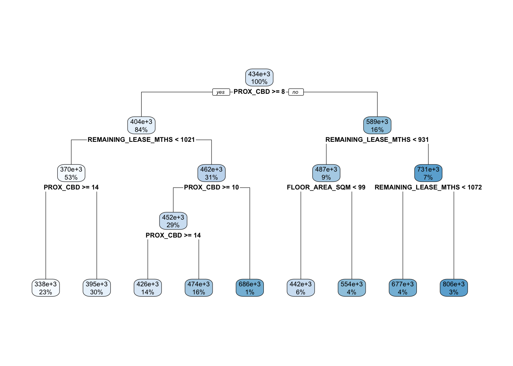
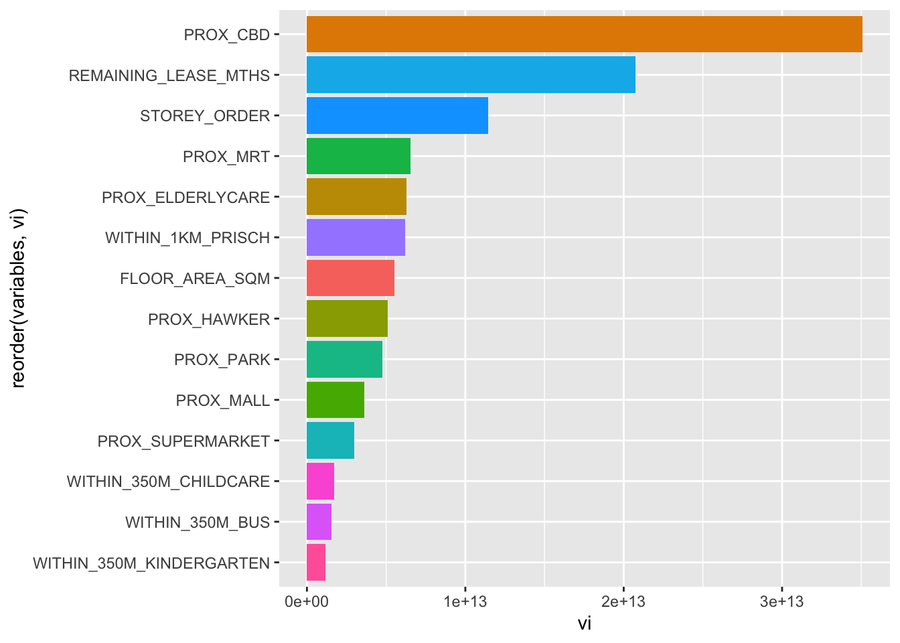
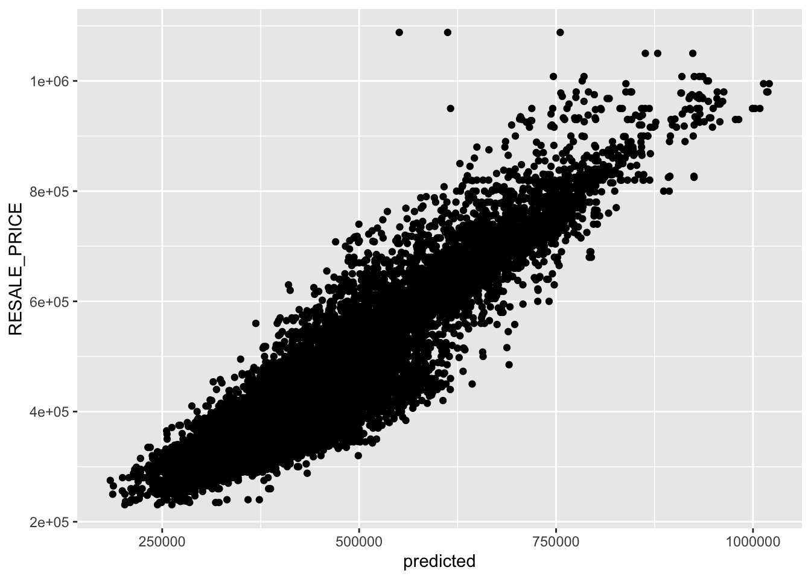

pacman::p_load(sf, spdep, GWmodel, SpatialML,
tmap, rsample, tidymodels, tidyverse,
gtsummary, rpart, rpart.plot, ggstatsplot,
performance)In-Class Exercise 09
Hands-On Exercise
R
sf
GWmodel
SpatialML
Geographically Weighted Predictive Models
Geographical Weighted Predictive Models
1.0 Importing Packages
Reflection
SpaialML package focuses only on random forest models and not other ML algorithms.
tidymodels framework is a collection of packages for modeling and machine learning such as recipes for data pre-processing, tune for tuning models, yardstick for evaluating model performance, among others.
rpart and rpart.plot packages will be used to demonstrate recursive partitioning, a fundamental concept behind random forest modelling.
2.0 Importing Datasets
We will read the datasets into R environment.
rs_sf <- read_rds("../data/rds/HDB_resale.rds")Next, the code chunk below is used tor reveal the properties of rs_sf object.
rs_sfSimple feature collection with 15901 features and 17 fields
Geometry type: POINT
Dimension: XY
Bounding box: xmin: 11597.31 ymin: 28217.39 xmax: 42623.63 ymax: 48741.06
Projected CRS: SVY21 / Singapore TM
# A tibble: 15,901 × 18
RESALE_PRICE FLOOR_AREA_SQM STOREY_ORDER REMAINING_LEASE_MTHS PROX_CBD
<dbl> <dbl> <int> <dbl> <dbl>
1 330000 92 1 684 8.82
2 360000 91 3 738 9.84
3 370000 92 1 733 9.56
4 375000 99 2 700 9.61
5 380000 92 2 715 8.35
6 380000 92 4 732 9.49
7 385000 92 3 706 8.96
8 395000 92 2 745 9.81
9 395000 93 4 731 10.3
10 395000 91 3 725 10.4
# ℹ 15,891 more rows
# ℹ 13 more variables: PROX_ELDERLYCARE <dbl>, PROX_HAWKER <dbl>,
# PROX_MRT <dbl>, PROX_PARK <dbl>, PROX_GOOD_PRISCH <dbl>, PROX_MALL <dbl>,
# PROX_CHAS <dbl>, PROX_SUPERMARKET <dbl>, WITHIN_350M_KINDERGARTEN <int>,
# WITHIN_350M_CHILDCARE <int>, WITHIN_350M_BUS <int>,
# WITHIN_1KM_PRISCH <int>, geometry <POINT [m]>
Reflection
rs_sf is in simple feature data frame format and has a total of 15901 observations with 18 variables.
3.0 Data Sampling
set.seed(1234)
resale_split <- initial_split(
rs_sf,
prop = 5/10,)
train_sf <- training(resale_split)
test_sf <- testing(resale_split)
Reflection
set.seed(1234) sets the seed of R’s random number generator, which is useful for creating simulations or random objects that can be reproduced.
initial_split function from the rsample package is used to split the rs_sf dataset into two parts. The prop = 5/10 argument indicates that the data is being split into two equal halves, with 50% of the data going into each set.
initial_split function use random sampling approach. rsample package can be used for other sampling patterns such as stratified sampling, group sampling and time-based sampling. More details can be read here: https://rsample.tidymodels.org/articles/Common_Patterns.html
We will save the train_sf and test_sf into rds for later use.
write_rds(train_sf, "../data/rds/train_sf.rds")
write_rds(test_sf, "../data/rds/test_sf.rds")
train_sf <- read_rds("../data/rds/train_sf.rds")
test_sf <- read_rds("../data/rds/test_sf.rds")train_df <- train_sf %>%
st_drop_geometry() %>%
as.data.frame()
test_df <- test_sf %>%
st_drop_geometry() %>%
as.data.frame()
Reflection
It is important to check which data class is compatible for the chosen analysis. Not all machine learning algorithms can handle all types of data. For example, many algorithms cannot process spatial data directly, which is why we dropped the geometry column. Also some algorithms cannot handle tibble data type and hence we convert it to data.frame.
4.0 Computing Correlation Matrix
To check for multicollinearity, we compute a correlation matrix using the ggcorrmat() function from the ggstatsplot package. This function creates a correlation matrix plot, which is a graphical representation of the correlation matrix. This correlation matrix will give us a visual overview of how the predictors in our dataset are related to each other. If we see high correlation coefficients (close to 1 or -1), we may need to address multicollinearity before proceeding with our analysis.
ggstatsplot::ggcorrmat(
data = train_df[, 2:17],
matrix.type = "upper",
type = "parametric",
tr = 0.2,
partial = FALSE,
k = 2L,
sig.level = 0.05,
conf.level = 0.95,
bf.prior = 0.707,
ggcorrplot.args = list(
tl.cex = 10,
pch.cex = 5,
lab_size = 3
)) +
ggplot2::theme(
axis.text.x = ggplot2::element_text(
margin = ggplot2::margin(t = 0.15, r = 0.15, b = 0.15, l = 0.15, unit = "cm")
)
)
Reflection
The correlation matrix above shows that all the correlation values are below 0.65. Hence, there is no sign of multicollinearity.
5.0 Building and Fitting MLR Model
In this section, we will be building a non-spatial multiple linear regression model. This type of model is a statistical technique that uses several explanatory variables to predict the outcome of a response variable. The goal is to model the relationship between the explanatory and response variables.
rs_mlr <- lm(RESALE_PRICE ~ FLOOR_AREA_SQM +
STOREY_ORDER + REMAINING_LEASE_MTHS +
PROX_CBD + PROX_ELDERLYCARE + PROX_HAWKER +
PROX_MRT + PROX_PARK + PROX_MALL + PROX_CHAS +
PROX_SUPERMARKET + WITHIN_350M_KINDERGARTEN +
WITHIN_350M_CHILDCARE + WITHIN_350M_BUS +
WITHIN_1KM_PRISCH,
data=train_df)
summary(rs_mlr)
Call:
lm(formula = RESALE_PRICE ~ FLOOR_AREA_SQM + STOREY_ORDER + REMAINING_LEASE_MTHS +
PROX_CBD + PROX_ELDERLYCARE + PROX_HAWKER + PROX_MRT + PROX_PARK +
PROX_MALL + PROX_CHAS + PROX_SUPERMARKET + WITHIN_350M_KINDERGARTEN +
WITHIN_350M_CHILDCARE + WITHIN_350M_BUS + WITHIN_1KM_PRISCH,
data = train_df)
Residuals:
Min 1Q Median 3Q Max
-179676 -39020 -1719 36755 327324
Coefficients:
Estimate Std. Error t value Pr(>|t|)
(Intercept) 109622.960 11993.611 9.140 < 2e-16 ***
FLOOR_AREA_SQM 2733.136 103.116 26.505 < 2e-16 ***
STOREY_ORDER 14198.168 384.182 36.957 < 2e-16 ***
REMAINING_LEASE_MTHS 346.624 5.208 66.557 < 2e-16 ***
PROX_CBD -16943.794 227.064 -74.621 < 2e-16 ***
PROX_ELDERLYCARE -13891.413 1124.964 -12.348 < 2e-16 ***
PROX_HAWKER -17758.037 1461.269 -12.152 < 2e-16 ***
PROX_MRT -32357.534 1965.095 -16.466 < 2e-16 ***
PROX_PARK -6714.626 1672.160 -4.016 5.99e-05 ***
PROX_MALL -14080.474 2268.191 -6.208 5.64e-10 ***
PROX_CHAS -5819.260 7208.182 -0.807 0.419510
PROX_SUPERMARKET -24077.152 5068.317 -4.751 2.06e-06 ***
WITHIN_350M_KINDERGARTEN 8730.822 721.593 12.099 < 2e-16 ***
WITHIN_350M_CHILDCARE -4629.126 399.231 -11.595 < 2e-16 ***
WITHIN_350M_BUS 979.339 252.851 3.873 0.000108 ***
WITHIN_1KM_PRISCH -8434.367 553.862 -15.228 < 2e-16 ***
---
Signif. codes: 0 '***' 0.001 '**' 0.01 '*' 0.05 '.' 0.1 ' ' 1
Residual standard error: 61050 on 7934 degrees of freedom
Multiple R-squared: 0.7405, Adjusted R-squared: 0.7401
F-statistic: 1510 on 15 and 7934 DF, p-value: < 2.2e-16tbl_regression(rs_mlr,
intercept = TRUE) %>%
add_glance_source_note(
label = list(sigma ~ "\U03C3"),
include = c(r.squared, adj.r.squared,
AIC, statistic,
p.value, sigma))| Characteristic | Beta | 95% CI1 | p-value |
|---|---|---|---|
| (Intercept) | 109,623 | 86,112, 133,134 | <0.001 |
| FLOOR_AREA_SQM | 2,733 | 2,531, 2,935 | <0.001 |
| STOREY_ORDER | 14,198 | 13,445, 14,951 | <0.001 |
| REMAINING_LEASE_MTHS | 347 | 336, 357 | <0.001 |
| PROX_CBD | -16,944 | -17,389, -16,499 | <0.001 |
| PROX_ELDERLYCARE | -13,891 | -16,097, -11,686 | <0.001 |
| PROX_HAWKER | -17,758 | -20,623, -14,894 | <0.001 |
| PROX_MRT | -32,358 | -36,210, -28,505 | <0.001 |
| PROX_PARK | -6,715 | -9,992, -3,437 | <0.001 |
| PROX_MALL | -14,080 | -18,527, -9,634 | <0.001 |
| PROX_CHAS | -5,819 | -19,949, 8,311 | 0.4 |
| PROX_SUPERMARKET | -24,077 | -34,012, -14,142 | <0.001 |
| WITHIN_350M_KINDERGARTEN | 8,731 | 7,316, 10,145 | <0.001 |
| WITHIN_350M_CHILDCARE | -4,629 | -5,412, -3,847 | <0.001 |
| WITHIN_350M_BUS | 979 | 484, 1,475 | <0.001 |
| WITHIN_1KM_PRISCH | -8,434 | -9,520, -7,349 | <0.001 |
| R² = 0.741; Adjusted R² = 0.740; AIC = 197,787; Statistic = 1,510; p-value = <0.001; σ = 61,046 | |||
| 1 CI = Confidence Interval | |||
6.0 Revising MLR Model
From the results in previous section, PROX_CHAS is not statistically significant. Hence, we will remove the PROX_CHAS column from the training and testing sets.
train_df <- train_df %>%
select(-c(PROX_CHAS))
train_sf <- train_sf %>%
select(-c(PROX_CHAS))
test_df <- test_df %>%
select(-c(PROX_CHAS))
test_sf <- test_sf %>%
select(-c(PROX_CHAS))After removal, we will re-run the MLR model again.
rs_mlr <- lm(RESALE_PRICE ~ FLOOR_AREA_SQM +
STOREY_ORDER + REMAINING_LEASE_MTHS +
PROX_CBD + PROX_ELDERLYCARE + PROX_HAWKER +
PROX_MRT + PROX_PARK + PROX_MALL +
PROX_SUPERMARKET + WITHIN_350M_KINDERGARTEN +
WITHIN_350M_CHILDCARE + WITHIN_350M_BUS +
WITHIN_1KM_PRISCH,
data=train_df)
summary(rs_mlr)
Call:
lm(formula = RESALE_PRICE ~ FLOOR_AREA_SQM + STOREY_ORDER + REMAINING_LEASE_MTHS +
PROX_CBD + PROX_ELDERLYCARE + PROX_HAWKER + PROX_MRT + PROX_PARK +
PROX_MALL + PROX_SUPERMARKET + WITHIN_350M_KINDERGARTEN +
WITHIN_350M_CHILDCARE + WITHIN_350M_BUS + WITHIN_1KM_PRISCH,
data = train_df)
Residuals:
Min 1Q Median 3Q Max
-179178 -39031 -1868 36751 327631
Coefficients:
Estimate Std. Error t value Pr(>|t|)
(Intercept) 109413.550 11990.543 9.125 < 2e-16 ***
FLOOR_AREA_SQM 2725.663 102.698 26.541 < 2e-16 ***
STOREY_ORDER 14192.913 384.118 36.949 < 2e-16 ***
REMAINING_LEASE_MTHS 346.996 5.187 66.893 < 2e-16 ***
PROX_CBD -16943.081 227.058 -74.620 < 2e-16 ***
PROX_ELDERLYCARE -13972.191 1120.481 -12.470 < 2e-16 ***
PROX_HAWKER -17968.486 1437.798 -12.497 < 2e-16 ***
PROX_MRT -32448.233 1961.837 -16.540 < 2e-16 ***
PROX_PARK -6753.096 1671.444 -4.040 5.39e-05 ***
PROX_MALL -14003.731 2266.148 -6.180 6.75e-10 ***
PROX_SUPERMARKET -25566.285 4720.643 -5.416 6.28e-08 ***
WITHIN_350M_KINDERGARTEN 8740.242 721.483 12.114 < 2e-16 ***
WITHIN_350M_CHILDCARE -4614.476 398.810 -11.571 < 2e-16 ***
WITHIN_350M_BUS 990.698 252.454 3.924 8.77e-05 ***
WITHIN_1KM_PRISCH -8438.093 553.831 -15.236 < 2e-16 ***
---
Signif. codes: 0 '***' 0.001 '**' 0.01 '*' 0.05 '.' 0.1 ' ' 1
Residual standard error: 61040 on 7935 degrees of freedom
Multiple R-squared: 0.7405, Adjusted R-squared: 0.7401
F-statistic: 1618 on 14 and 7935 DF, p-value: < 2.2e-16class(rs_mlr)[1] "lm"
Reflection
The MLR model we fitted returns an object of class lm. The generic accessor functions coefficients, effects, fitted.values and residuals extract various useful features of the lm class object.
7.0 Extracting Coordinates Data
In this step, we extract the X and Y coordinates from the full, training, and test datasets. The st_coordinates() function from the sf package is used to perform this extraction.
coords <- st_coordinates(rs_sf)
coords_train <- st_coordinates(train_sf)
coords_test <- st_coordinates(test_sf)
Reflection
If we inspect the documentation (https://search.r-project.org/CRAN/refmans/SpatialML/html/grf.bw.html) for bandwidth calculation of geographical random forest using grf.bw(), it expects a separate input called coords, which represent a numeric matrix or data frame of two columns giving the X,Y coordinates of the observations. These coordinates values are used to calculate spatial weight matrix.
In GWmodel package for GWR modelling, we just have to convert it to sp object and the algorithms automatically extract the coordinates, eliminating the need for manual input.
8.0 Recursive Partitioning
set.seed(1234)
rs_rp <- rpart(
formula = RESALE_PRICE ~ FLOOR_AREA_SQM +
STOREY_ORDER + REMAINING_LEASE_MTHS +
PROX_CBD + PROX_ELDERLYCARE + PROX_HAWKER +
PROX_MRT + PROX_PARK + PROX_MALL +
PROX_SUPERMARKET + WITHIN_350M_KINDERGARTEN +
WITHIN_350M_CHILDCARE + WITHIN_350M_BUS +
WITHIN_1KM_PRISCH,
data = train_df)
rs_rpn= 7950
node), split, n, deviance, yval
* denotes terminal node
1) root 7950 1.139546e+14 433705.6
2) PROX_CBD>=7.974483 6665 4.472144e+13 403736.0
4) REMAINING_LEASE_MTHS< 1020.5 4228 1.573100e+13 370187.4
8) PROX_CBD>=14.48068 1820 2.748388e+12 337963.6 *
9) PROX_CBD< 14.48068 2408 9.664405e+12 394542.6 *
5) REMAINING_LEASE_MTHS>=1020.5 2437 1.597594e+13 461940.1
10) PROX_CBD>=10.40657 2331 9.762718e+12 451754.4
20) PROX_CBD>=14.20377 1088 3.345588e+12 426109.1 *
21) PROX_CBD< 14.20377 1243 5.075243e+12 474201.8 *
11) PROX_CBD< 10.40657 106 6.532500e+11 685929.1 *
3) PROX_CBD< 7.974483 1285 3.219685e+13 589151.4
6) REMAINING_LEASE_MTHS< 930.5 745 6.613365e+12 486637.6
12) FLOOR_AREA_SQM< 98.5 451 2.446537e+12 442460.5 *
13) FLOOR_AREA_SQM>=98.5 294 1.936449e+12 554405.7 *
7) REMAINING_LEASE_MTHS>=930.5 540 6.952722e+12 730582.5
14) REMAINING_LEASE_MTHS< 1071.5 314 2.461969e+12 676641.3 *
15) REMAINING_LEASE_MTHS>=1071.5 226 2.307737e+12 805527.4 *To visualise how recursive partitioning works, we will pass the model to rpart.plot() function.
rpart.plot(rs_rp)
Reflection
Recursive partitioning can use the same variables more than once in different parts of the tree. This capability can uncover complex interdependencies between sets of variables. That is why, we see variables such as PROX_CBD and REMAINING_LEASE_MTHS in different levels of the trees.
9.0 Non-Spatial Random Forest Modelling
set.seed(1234)
rs_rf <- ranger(
RESALE_PRICE ~ FLOOR_AREA_SQM +
STOREY_ORDER +
REMAINING_LEASE_MTHS +
PROX_CBD +
PROX_ELDERLYCARE +
PROX_HAWKER +
PROX_MRT +
PROX_PARK +
PROX_MALL +
PROX_SUPERMARKET +
WITHIN_350M_KINDERGARTEN +
WITHIN_350M_CHILDCARE +
WITHIN_350M_BUS +
WITHIN_1KM_PRISCH,
data=train_df,
importance = "impurity")
write_rds(rs_rf, "../data/models/rs_rf.rds")
Reflection
The ranger package in R is a fast implementation of Random Forests, particularly suited to high dimensional data. By using ranger as a base, we can take advantage of its speed and functionality when calibrating your models.
When it comes to spatial analysis, packages like SpatialML use ranger as a dependency. This means that the functions in SpatialML are built upon the functions in ranger. Using ranger as a base model allows for seamless integration and readily calibration of base model to a spatial model.
- The “impurity” measure is the Gini index for classification, the variance of the responses for regression and the sum of statistics for survival.
rs_rf <- read_rds("../data/models/rs_rf.rds")
rs_rfRanger result
Call:
ranger(RESALE_PRICE ~ FLOOR_AREA_SQM + STOREY_ORDER + REMAINING_LEASE_MTHS + PROX_CBD + PROX_ELDERLYCARE + PROX_HAWKER + PROX_MRT + PROX_PARK + PROX_MALL + PROX_SUPERMARKET + WITHIN_350M_KINDERGARTEN + WITHIN_350M_CHILDCARE + WITHIN_350M_BUS + WITHIN_1KM_PRISCH, data = train_df, importance = "impurity")
Type: Regression
Number of trees: 500
Sample size: 7950
Number of independent variables: 14
Mtry: 3
Target node size: 5
Variable importance mode: impurity
Splitrule: variance
OOB prediction error (MSE): 782127271
R squared (OOB): 0.9454421 10.0 Variable Importance
Variable importance or feature importance scores are indicative of how “important” the variable is to our model.
By using impurity importance argument in our ranger function earlier, rs_rf has contains the generated variable.importance. Now we will extract variable.importance and save it into vi.
vi <- as.data.frame(rs_rf$variable.importance)
vi$variables <- rownames(vi)
vi <- vi%>%
rename(vi = "rs_rf$variable.importance")Plot the graph.
ggplot(data = vi,
aes(x = vi,
y = reorder(variables, vi),
fill = variables)) +
geom_bar(stat="identity", show.legend = FALSE)
Reflection
reorder(variables, vi) function is used to reorder the levels of variables based on the values of vi, so that the bars will be sorted in the plot.
Since there is no sign of quasi-complete or complete separation, we can proceed to calibrate our bandwidth.
11.0 Fitting Geographical Random Forest
set.seed(1234)
gwRF_adaptive <- grf(formula = RESALE_PRICE ~ FLOOR_AREA_SQM +
STOREY_ORDER +
REMAINING_LEASE_MTHS +
PROX_CBD +
PROX_ELDERLYCARE +
PROX_HAWKER +
PROX_MRT +
PROX_PARK +
PROX_MALL +
PROX_SUPERMARKET +
WITHIN_350M_KINDERGARTEN +
WITHIN_350M_CHILDCARE +
WITHIN_350M_BUS +
WITHIN_1KM_PRISCH,
dframe=train_df,
bw = 55,
step = 1,
nthreads = 16,
forest = FALSE,
weighted = TRUE,
kernel="adaptive",
coords=coords_train)rs_grf <- read_rds("../data/models/rs_grf.rds")test_df <- cbind(test_sf, coords_test) %>%
st_drop_geometry()12.0 Predicting with test data
Next, predict.grf() of spatialML will be used to predict the resale value by using the test data and gwRF_adaptive model calibrated earlier.
grf_pred <- read_rds("../data/models/grf_pred.rds")
grf_pred_df <- as.data.frame(grf_pred)test_pred <- test_df %>%
select(RESALE_PRICE) %>%
cbind(grf_pred_df)rf_pred <- predict(rs_rf, test_df)
rf_pred_df <- as.data.frame(rf_pred$predictions) %>% rename(rf_pred = "rf_pred$predictions")mlr_pred <- predict(rs_mlr, test_df)
mlr_pred_df <- as.data.frame(mlr_pred) %>% rename(mlr_pred = "mlr_pred")test_pred <- cbind(test_pred,rf_pred_df)
test_pred <- cbind(test_pred,mlr_pred_df)13.0 Performance Evaluation with RMSE
yardstick::rmse(test_pred,
RESALE_PRICE,
grf_pred)# A tibble: 1 × 3
.metric .estimator .estimate
<chr> <chr> <dbl>
1 rmse standard 28745.yardstick::rmse(test_pred,
RESALE_PRICE,
rf_pred)# A tibble: 1 × 3
.metric .estimator .estimate
<chr> <chr> <dbl>
1 rmse standard 29242.yardstick::rmse(test_pred,
RESALE_PRICE,
mlr_pred)# A tibble: 1 × 3
.metric .estimator .estimate
<chr> <chr> <dbl>
1 rmse standard 61821.mc <- test_pred %>%
pivot_longer(cols = c(2:4),
names_to = "models",
values_to = "predicted")Finally, we can visualize the actual resale price and the predicted resale price using a scatterplot. This can help us understand how well our model is performing.
ggplot(data = mc,
aes(x = predicted,
y = RESALE_PRICE)) +
geom_point()